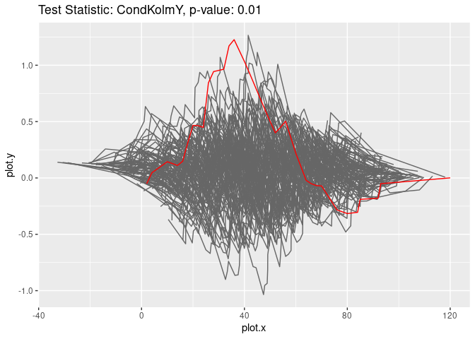

This R package provides classes and methods to fit parametric regression models to given data and to perform bootstrap-based goodness-of-fit tests using different test statistics.
The data can either consist of pairs of covariates and response variables or in case of random censorship it consists of tuples denoting covariates, censored survival times and censoring indicators. The package includes different parametric regression models (mostly generalized linear models) and test statistics (based on different papers). It can easily be extended by other user-defined models and test statistics.
Installation
You can install it from CRAN
install.packages("gofreg")or github
devtools::install_github("gkremling/gofreg")Example
This is a basic example which shows how to fit a parametric regression model to a given dataset and afterwards perform a goodness-of-fit test. In this example, we use the dataset datasets::cars, a generalized linear model with normal distribution and the conditional Kolmogorov test statistic of the marginal distribution of defined in Kremling & Dikta (2024) arXiv:2409.20262.
library(gofreg)
set.seed(123)
data <- dplyr::tibble(x = datasets::cars$speed, y = datasets::cars$dist)
model <- GLM.new(distr = "normal", linkinv = identity)
model$fit(data, params_init = list(beta = 3, sd = 2), inplace = TRUE)
print(model$get_params())
#> $beta
#> [1] 2.908838
#>
#> $sd
#> [1] 16.09429
gt <- GOFTest$new(data = data, model_fitted = model, test_stat = CondKolmY$new(), nboot = 100)
print(gt$get_pvalue())
#> [1] 0.01
gt$plot_procs()